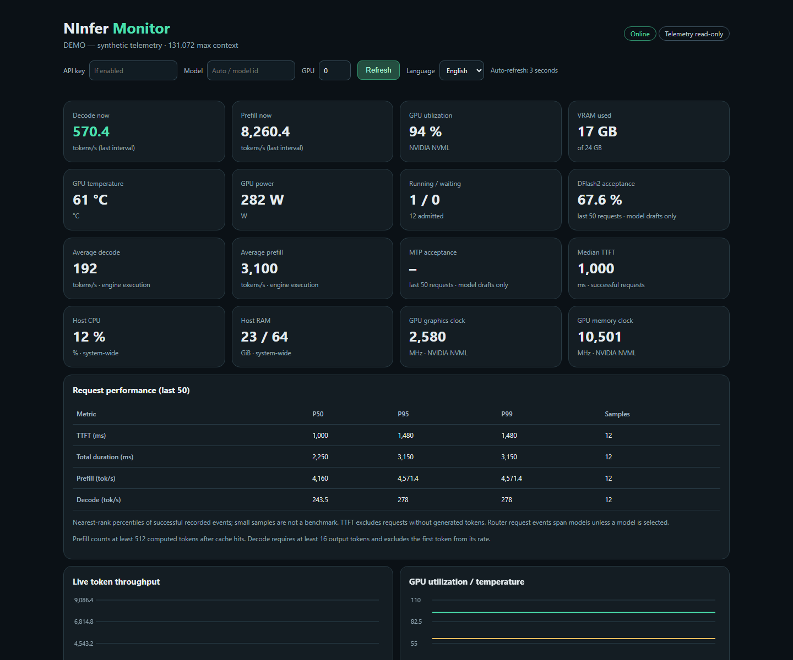

OPEN SOURCE · ADA LOVELACE · SM89
Local LLM inference
on the RTX 4090.
Native C++ / CUDA inference, portable Windows binaries and an OpenAI-compatible local API. Built for reproducible performance and long-context experimentation on NVIDIA's 24 GB Ada GPU.
Apache-2.0 · CUDA 13.4 · Windows x64 · Model weights downloaded separately.
NEW · STABLE
NInfer RTX 4090 v0.1.8
CUDA 13.4, native SM89 kernels and portable DLL runtime. The exact published package passed local RTX 4090 smoke tests with Inkling 2 (DFlash2 K7 and DSpark K3), tool calling and Qwen3.8 (DFlash2 K7). Rank-1 remains experimental.
BUILT-IN WEB DASHBOARD
Monitor your local inference
GPU utilization, VRAM, temperature, power, decode/prefill, DFlash2 acceptance and KV occupancy in your browser. Bundled with ninfer-serve; no separate service required.

Measured RTX 4090 performance
Huihui Qwen3.8-27B IQ3_S, DFlash2 K=5, 1,831 real serving requests, October 2026. These are workload-specific observations, not a guarantee or a comparison with other engines.
Read methodology and controlled long-context results →Designed for local AI developers
Native CUDA on Ada
SM89 builds, GPU route calibration, CUDA Graph experiments and profiled inference kernels.
Speculative decoding
Choose model-compatible DFlash2 or MTP backends. Measure draft width and KV-cache trade-offs.
OpenAI-compatible serving
Run a local HTTP endpoint for chat clients and coding tools. Model-dependent Anthropic-compatible features are also documented.
Quantized models and long contexts
Supported GGUF-derived formats, hybrid prefix reuse and quantized KV caches. Context fit depends on the model and memory budget.
NEW · NINFER v0.1.8
Inkling 2 Mini Uncensored — local RTX 4090 inference
GSQ-RCO IQ3_S, 12.08 GiB model file, experimental AtomicChat Rank-1, DFlash2 or DSpark and vision.
302.2 tok/s
DFlash2 K7, one fixed coding prompt.
97.56% HumanEval
160/164 in the local chat protocol; not a canonical leaderboard score.
250,006 prompt tokens
3/3 synthetic keys recovered.
Historical workload-specific measurements; Rank-1 remains experimental. Regular v0.1.8 runtime separately GPU-smoke tested.
Download and run a model
Start with the verified stable package, then choose a compatible .ninfer model artifact. The portable package includes runtime libraries; model weights are separate.
Huihui Qwen3.8-27B IQ3_S
Community conversion with Vision, DFlash2 and MTP. Approximately 13.99 GiB model file.
Model card and download →Huihui Qwen3.8-27B Swift 1.5
Alternative community conversion with separately selectable speculative backends.
Model card and download →Other upstream model families include Qwen variants, Ternary Bonsai, Gemma, Flint, DeepSeek and Inkling. Check supported models; not all fit 24 GB or have been independently validated here.
Release status
v0.1.8
November 28, 2026: exact portable archive passed three model/drafter smoke tests on RTX 4090. Not a long-duration or exhaustive quality test.
Release notesv0.1.4
Previous stable version; historical benchmarks remain unchanged.
GPU verificationSnapshot: November 28, 2026. All releases.
Help improve RTX 4090 inference
Share reproducible measurements, report bugs or follow new releases. Independent results and negative findings are welcome.
Explore the technical guides
Interactive tools
New tools and comparison measurements
SM89 technical articles and Monitor demo
Native SM89 CUDA and kernel routing
Architecture, calibration, graph paths and reproducible qualification.
DFlash2 and MTP on SM89
Draft widths, memory and exact v0.1.4 benchmark evidence.
Interactive Monitor demo
Synthetic development preview; no real inference or local access.
v0.1.4: long context and coding
Controlled Engine measurements, RTX 4090, 512 decode tokens, two repetitions per cell; prefill 4096, N-gram off. K7: 272.74 / 240.60 / 263.93 tok/s at 64K / 128K / 176128.
Benchmark results